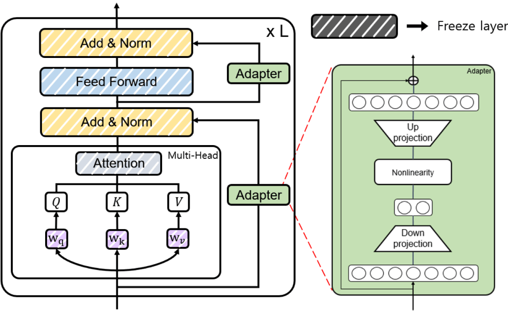

6. Fine Tuning
Chinese proverb
Good tools are prerequisite to the successful execution of a job. – old Chinese proverb
Colab Notebook for This Chapter
Embedding Model Fine-tuning:

LLM (Llama 2 7B) Model Fine-tuning:
Fine-tuning is a machine learning technique where a pre-trained model (like a large language model or neural network) is further trained on a smaller, specific dataset to adapt it to a particular task or domain. Instead of training a model from scratch, fine-tuning leverages the knowledge already embedded in the pre-trained model, saving time, computational resources, and data requirements.
The three conventional feature-based and finetuning approaches (Souce Finetuning Sebastian).
6.1. Cutting-Edge Strategies for LLM Fine-Tuning
Over the past year, fine-tuning methods have made remarkable strides. Modern methods for fine-tuning LLMs focus on efficiency, scalability, and resource optimization. The following strategies are at the forefront:
6.1.1. LoRA (Low-Rank Adaptation)
LoRA reduces the number of trainable parameters by introducing low-rank decomposition into the fine-tuning process.

Weight update matrix (Souce LORA Sebastian).
How It Works:
Instead of updating all model weights, LoRA injects low-rank adapters into the model’s layers.
The original pre-trained weights remain frozen; only the low-rank parameters are optimized.
Benefits:
Reduces memory and computational requirements.
Enables fine-tuning on resource-constrained hardware.
6.1.2. QLoRA (Quantized Low-Rank Adaptation)
QLoRA combines low-rank adaptation with 4-bit quantization of the pre-trained model.
How It Works:
The LLM is quantized to 4-bit precision to reduce memory usage.
LoRA adapters are applied to the quantized model for fine-tuning.
Precision is maintained using methods like NF4 (Normalized Float 4) and double backpropagation.
Benefits:
Further reduces memory usage compared to LoRA.
Enables fine-tuning of massive models on consumer-grade GPUs.
6.1.3. PEFT (Parameter-Efficient Fine-Tuning)
PEFT is a general framework for fine-tuning LLMs with minimal trainable parameters.

|
 |
{kind=link}
Source: [PEFT]
Techniques Under PEFT:
LoRA: Low-rank adaptation of weights.
Adapters: Small trainable layers inserted into the model.
Prefix Tuning: Fine-tuning input prefixes instead of weights.
Prompt Tuning: Optimizing soft prompts in the input space.
Benefits:
Reduces the number of trainable parameters.
Faster training and lower hardware requirements.
6.1.4. SFT (Supervised Fine-Tuning)
SFT adapts an LLM using a labeled dataset in a fully supervised manner.
How It Works:
The model is initialized with pre-trained weights.
It is fine-tuned on a task-specific dataset with a supervised loss function (e.g., cross-entropy).
Benefits:
Achieves high performance on specific tasks.
Essential for aligning models with labeled datasets.
6.1.5. RLHF (Reinforcement Learning from Human Feedback)
RLHF is a technique used to fine-tune language models, aligning their behavior with human preferences or specific tasks. RLHF incorporates feedback from humans to guide the model’s learning process, ensuring that its outputs are not only coherent but also align with desired ethical, practical, or stylistic goals.
How It Works:
The model is initialized with pre-trained weights.
The pretrained model is fine-tuned further using reinforcement learning, guided by the reward model.
A reinforcement learning algorithm, such as Proximal Policy Optimization (PPO), optimizes the model to maximize the reward assigned by the reward model.
Note
- Direct Preference Optimization
DPO is a technique for aligning large language models (LLMs) with human preferences, offering an alternative to the traditional Reinforcement Learning from Human Feedback (RLHF) approach that uses Proximal Policy Optimization (PPO). Instead of training a separate reward model and using reinforcement learning, DPO simplifies the process by directly leveraging human preference data to fine-tune the model through supervised learning.
- Proximal Policy Optimization
PPO is a reinforcement learning algorithm commonly used in RLHF to fine-tune LLMs. PPO optimizes the model’s policy by maximizing the reward signal provided by a reward model, which represents human preferences.
Comparison: DPO vs PPO
Feature
DPO
PPO
Training Paradigm
Supervised fine-tuning with preferences
Reinforcement learning with a reward model
Workflow Complexity
Simpler
More complex (requires reward model and iterative RL)
Stability
More stable (uses supervised learning)
Less stable (inherent to RL methods)
Efficiency
Computationally efficient
Computationally intensive
Scalability
Scales well with large preference datasets
Requires significant compute for RL steps
Use Case
Directly aligns LLM with preferences
Optimizes policy for long-term reward maximization
Human Preference Modeling
Directly encoded in loss function
Encoded via a reward model
Benefits:
RLHF ensures the model’s outputs are ethical, safe, and aligned with human expectations, reducing harmful or biased content.
Responses become more relevant, helpful, and contextually appropriate, enhancing user experience.
Fine-tuning with RLHF allows models to be customized for specific use cases, such as customer service, creative writing, or technical support.
The process of training a model using reinforcement learning from human feedback (RLHF) involves three key steps, as outlined in the paper titled “Training language models to follow instructions with human feedback” by OpenAI [LongOuyang].
InstructGPT Overview (Source: Training language models to follow instructions with human feedback)
6.1.5.1. PPO
Proximal Policy Optimization (PPO) (Paper: Proximal Policy Optimization Algorithms) is a key algorithm used in RLHF to fine-tune language models based on human preferences. It is utilized to optimize the policy of a language model by maximizing a reward function derived from human feedback. This process helps align the model’s outputs with human values and preferences. [JohnSchulman]
State, Action, and Reward in the Context of LLMs
In the context of LLMs, the components of reinforcement learning are defined as follows:
State: The state corresponds to the input prompt or context provided to the language model. It represents the scenario or query that requires a response.
Action: The action is the output generated by the language model, i.e., the response or continuation of text based on the given state (prompt).
Reward: The reward is a scalar value that quantifies how well the generated response aligns with human preferences or task objectives. It is typically derived from a reward model trained on human feedback.
Policy: A policy refers to the strategy or function that maps a given state (input prompt and context) to an action (the next token or sequence of tokens to generate). The policy governs how the LLM generates responses and is optimized to maximize a reward signal, such as alignment with human preferences or task-specific objectives.
Proximal Policy Optimization (PPO) is a reinforcement learning algorithm designed to optimize the policy of an agent in a stable and efficient manner. It is particularly effective in environments with discrete or continuous action spaces. Here’s an overview of PPO along with its objective function:
PPO Objective Function
PPO algorithm extends the CLIP objective by incorporating additional terms for value function optimization and entropy regularization.
where
\(J^{CLIP}(\theta)\) is CLIP objective in policy gradient methods. The use of the minimum function ensures that if the new policy’s probability ratio deviates too much from 1 (indicating a significant change), it will not receive excessive credit (or blame) for its performance based on the advantage estimate.
\[J^{CLIP}(\theta) = E[\min(r(\theta)\hat{A}_{\theta_{old}}(s,a)), \text{clip}(r(\theta),1-\epsilon, 1+\epsilon) \hat{A}_{\theta_{old}}(s,a)]\]\(-(V_\theta(s) - V_{target})^2\) is the negative mean squared error (MSE), which we aim to maximize. It minimizes the difference between the predicted value function \(V_\theta(s)\) and the target value \(V_{target}\). The coefficient \(c_2\) controls the tradeoff between policy optimization and value function fitting.
\(H(s,\pi_\theta(\cdot))\) represents the entropy of the policy. Maximizing entropy encourages exploration by preventing premature convergence to deterministic policies. The coefficient \(c_2\) determines the weight of this entropy term.
Below is a pseudocode of PPO-Clip Algorithm

PPO Clip Algorithm (Source: OpenAI Spinning Up - Proximal Policy Optimization)
Steps of RLHF Using PPO
The RLHF process using PPO involves three main stages:
Training a Reward Model: A reward model is trained to predict human preferences based on labeled data. Human annotators rank multiple responses for each prompt, and this ranking data is used to train the reward model in a supervised manner. The reward model learns to assign higher scores to responses that align better with human preferences.
Fine-Tuning the LLM with PPO: After training the reward model, PPO is used to fine-tune the LLM. The steps are as follows:
Initialize Policies: Start with a pre-trained LLM as both the policy model (actor) and optionally as the critic for value estimation.
The actor is the language model that generates responses (actions) based on input prompts (states).
For example: Input: “Explain quantum mechanics.” Output: “Quantum mechanics is a branch of physics that studies particles at atomic and subatomic scales.”
The critic is typically implemented as a value function, which predicts how good a particular response (action) is in terms of achieving long-term objectives. This model predicts a scalar value for each token or sequence, representing its expected reward or usefulness.
For example:
Input: “Explain quantum mechanics.” → “Quantum mechanics is…” Output: A value score indicating how well this response aligns with human preferences or task objectives.
Both the actor and critic can be initialized from the same pre-trained LLM weights to leverage shared knowledge from pretraining. However, their roles diverge during fine-tuning: The actor focuses on generating responses. The critic focuses on evaluating those responses.
Collect Rollouts: Interact with the environment by sampling prompts from a dataset. Generate responses (actions) using the current policy. Compute rewards for these responses using the trained reward model.
Compute Advantage Estimates: Use rewards from the reward model and value estimates from the critic to compute advantages:
\[\hat{A}(s, a) = R_t + \gamma V(s_{t+1}) - V(s_t),\]where $ R_t $ is the reward from the reward model.
Optimize Policy with PPO Objective: Optimize the policy using PPO’s clipped surrogate objective:
\[J^{CLIP}(\theta) = \mathbb{E}\left[\min\left(r(\theta)\hat{A}(s, a), \text{clip}(r(\theta), 1-\epsilon, 1+\epsilon)\hat{A}(s, a)\right)\right],\]where $ r(theta) = frac{pi_theta(a|s)}{pi_{theta_{text{old}}}(a|s)} $ is the probability ratio between new and old policies.
Update Value Function: Simultaneously update the value function by minimizing mean squared error between predicted values and rewards:
\[\mathcal{L}_{\text{value}} = \mathbb{E}\left[(V_\theta(s) - R_t)^2\right].\]Repeat: Iterate over multiple epochs until convergence, ensuring stable updates by clipping policy changes.
Evaluation: Evaluate the fine-tuned LLM on unseen prompts to ensure it generates outputs aligned with human preferences. Optionally, collect additional human feedback to further refine both the reward model and policy.
The following diagrams summarizes the high-level RLHF process with PPO, from preference data creation, to training a reward model, and using reward model in an RL loop to fine tune LLM.

Flowchart of PPO in RLHF
The following workflow chart illustrates the more detailed training process of RLHF with PPO. [RuiZheng]
RLHF Training Workflow (Source: Secrets of RLHF in Large Language Models Part I PPO)
RLHF Training Tricks
There are practical challenges that arise during RLHF training. These challenges stem from the inherent complexities of RL, especially when applied to aligning LLMs with human preferences. Therefore, tricks are essential for addressing the practical limitations of RLHF, ensuring the training process remains efficient, stable, and aligned with human preferences while minimizing the impact of inherent challenges in RL systems.

RLHF Training Tricks (Source: Secrets of RLHF in Large Language Models Part I PPO)
6.1.5.2. DPO
The main reason why RLHF with PPO is hard is that it takes a lot of redundant effort. Policy Model is all we need, all other efforts are not necessary. DPO (Direct Preference Optimization) is a novel alternative to traditional RLHF for fine-tuning LLMs. It simplifies the RLHF process by eliminating the need for complex reward models and RL algorithms. Instead, DPO reframes the problem of aligning LLMs with human preferences as a classification problem using human-labeled preference data. [RafaelRafailov]
The main idea is DPO and difference between DPO and PPO are shown in the figure below

DPO Idea in the Paper (Source: Direct Preference Optimization Your Language Model is Secretly a Reward Model)
DPO Objective
RLHF objective is defined as follows. Keep in mind that no matter whether DPO or PPO is used, the objective is always like this.
where \(\beta D_{KL}\big[\pi_\theta(y|x) || \pi_{ref}(y|x)\big]\) is a regularization term. When applying RL to NLP, regularization is often needed. Otherwise RL would explore every possible situation and find out hidden tricks which deviate from a language model.
DPO’s objective function is derived by incoroprating the probability of preference from reward function of optimal policy. DPO paper has provided detailed steps of deriving the gradient of the DPO objective:[RafaelRafailov]
Key ideas of DPO objective:
DPO’s objective aims to increase the likelihood of generating preferred responses over less preferred ones. By focusing directly on preference data, DPO eliminates the need to first fit a reward model that predicts scalar rewards based on human preferences. This simplifies the training pipeline and reduces computational overhead.
Value functions exist to help reduce the variance of the reward model. In DPO, the value function is not involved because DPO does not rely on a traditional RL framework, such as Actor-Critic methods. Instead, DPO directly optimizes the policy using human preference data as a classification task, skipping the intermediate steps of training a reward model or estimating value functions.
DPO was originally designed to work with pairwise preference data, however, recent advancements and adaptations have extended its applicability to ranking preference data as well (e.g RankDPO).
import torch.nn.functional as F
def dpo_loss(pi_logps, ref_logps, yw_idxs, yl_idxs, beta):
"""
pi_logps: policy logprobs, shape (B,)
ref_logps: reference model logprobs, shape (B,)
yw_idxs: preferred completion indices in [0, B-1], shape (T,)
yl_idxs: dispreferred completion indices in [0, B-1], shape (T,)
beta: temperature controlling strength of KL penalty
Each pair of (yw_idxs[i], yl_idxs[i]) represents the
indices of a single preference pair.
"""
pi_yw_logps, pi_yl_logps = pi_logps[yw_idxs], pi_logps[yl_idxs]
ref_yw_logps, ref_yl_logps = ref_logps[yw_idxs], ref_logps[yl_idxs]
pi_logratios = pi_yw_logps - pi_yl_logps
ref_logratios = ref_yw_logps - ref_yl_logps
losses = -F.logsigmoid(beta * (pi_logratios - ref_logratios))
rewards = beta * (pi_logps - ref_logps).detach()
return losses, rewards
Steps of RLHF Using DPO
1. Initial Setup and Supervised Fine-Tuning (SFT): Begin by fine-tuning a pre-trained LLM using supervised learning on a dataset that is representative of the tasks the model will perform. This step ensures the model has a strong foundation in the relevant domain, preparing it for preference-based optimization.
2. Collect Preference Data: Gather human feedback in the form of pairwise preferences or rankings. Annotators evaluate responses generated by the model and indicate which ones they prefer. Construct a dataset of prompts and corresponding preferred and less-preferred responses.
3. Iterative Rounds of DPO
Sampling and Annotation: In each round, sample a set of responses from the model for given prompts. Collect new preference annotations based on these samples, allowing for dynamic updates to the preference dataset. (Public preference data works as well. Off-policy and on-policy data both work).
Preference Optimization: Use DPO to adjust the model’s outputs based on collected preference data:
Model Update: Fine-tune the model using this loss function to increase the likelihood of generating preferred responses.
4. Evaluation and Iteration
Performance Assessment: After each round, evaluate the model’s performance on new prompts to ensure it aligns with human preferences. Use feedback from these evaluations to inform subsequent rounds of sampling and optimization.
Iterative Refinement: Continue this loop process over multiple rounds, iteratively refining the model’s alignment with human preferences through continuous sampling and preference optimization.
DPO Variants
The key area of research involves developing variants of DPO and conducting theoretical analyses to understand its limitations and potential improvements. This includes exploring different loss functions or optimization strategies that can be applied within the DPO framework.
One significant area of research focuses on refining the loss function used in DPO. This includes exploring ways to eliminate the need for a reference model, which can simplify the optimization process.
Examples:
Another key direction involves leveraging existing supervised fine-tuning data as preference data for DPO. This strategy aims to enhance the quality of preference data by utilizing high-quality labeled datasets that may already exist from previous SFT processes.
Examples:
6.1.5.3. Main Difficulties in RLHF
Data Collection
In practice, people noticed that the collection of human feedback in the form of the preference dataset is a slow manual process that needs to be repeated whenever alignment criteria change. And there is increasing difficulty in annotating preference data as models become more advanced, particularly because distinguishing between outputs becomes more nuanced and subjective.
The paper “CDR: Customizable Density Ratios of Strong-over-weak LLMs for Preference Annotation” explains that as models become more advanced, it becomes harder to identify which output is better due to subtle differences in quality. This makes preference data annotation increasingly difficult and subjective.
Another paper, “Improving Context-Aware Preference Modeling for Language Models,” discusses how the underspecified nature of natural language and multidimensional criteria make direct preference feedback difficult to interpret. This highlights the challenge of providing consistent annotations when outputs are highly sophisticated and nuanced.
“Less for More: Enhancing Preference Learning in Generative Language Models” also notes that ambiguity among annotators leads to inconsistently annotated datasets, which becomes a greater issue as model outputs grow more complex.
Reward Hacking
Reward hacking is a common problem in reinforcement learning, where the agent learns to exploit the system by maximizing its reward through actions that deviate from the intended goal. In the context of RLHF, reward hacking occurs when training settles in an unintended region of the loss landscape. In this scenario, the model generates responses that achieve high reward scores, but these responses may fail to be meaningful or useful to the user.
In PPO, reward hacking occurs when the model exploits flaws or ambiguities in the reward model to achieve high rewards without genuinely aligning with human intentions. This is because PPO relies on a learned reward model to guide policy updates, and any inaccuracies or biases in this model can lead to unintended behaviors being rewarded. PPO is particularly vulnerable to reward hacking if the reward model is not robustly designed or if it fails to capture the true objectives of human feedback. The iterative nature of PPO, which involves continuous policy updates based on reward signals, can exacerbate this issue if not carefully managed.
DPO avoids explicit reward modeling by directly optimizing policy based on preference data. However, it can still encounter issues similar to reward hacking if the preference data is biased or if the optimization process leads to overfitting specific patterns in the data that do not generalize well. While DPO does not suffer from reward hacking in the traditional sense (since it lacks a separate reward model), it can still find biased solutions that exploit out-of-distribution responses or deviate from intended behavior due to distribution shifts between training and deployment contexts.
The article “Reward Hacking in Reinforcement Learning” by Lilian Weng discusses how reward hacking occurs when a RL agent exploits flaws or ambiguities in the reward function to achieve high rewards without genuinely learning the intended task. It highlights that in RLHF for language models, reward hacking is a critical challenge, as models might learn to exploit unit tests or mimic biases to achieve high rewards, which can hinder real-world deployment.
The research “Scaling Laws for Reward Model Overoptimization” explores how optimizing against reward models trained to predict human preferences can lead to overoptimization, hindering the actual objective.
Impact of Policy Model Size: Holding the RM size constant, experiments showed that larger policy models exhibited similar overoptimization trends as smaller models, despite achieving higher initial gold scores. This implies that their higher performance on gold rewards does not lead to excessive optimization pressure on the RM.
Relationship with RM Data Size: Data size had a notable effect on RM performance and overoptimization. Models trained on fewer than ~2,000 comparison labels showed near-chance performance, with limited improvement in gold scores. Beyond this threshold, all RMs, regardless of size, benefited from increased data, with larger RMs showing greater improvements in gold rewards compared to smaller ones.
Scaling Laws for RM Parameters and Data Size: Overoptimization patterns scaled smoothly with both RM parameter count and data size. Larger RMs demonstrated better alignment with gold rewards and less susceptibility to overoptimization when trained on sufficient data, indicating improved robustness.
Proxy vs. Gold Reward Trends: For small data sizes, proxy reward scores deviated significantly from gold reward scores, highlighting overoptimization risks. As data size increased, the gap between proxy and gold rewards narrowed, reducing overoptimization effects.
Note that the KL divergence term in the RLHF objective is intended to prevent the policy from deviating too much from a reference model, thereby maintaining stability during training. However, it does not fully prevent reward hacking. Reward hacking occurs when an agent exploits flaws or ambiguities in the reward model to achieve high rewards without genuinely aligning with human intentions. The KL divergence penalty does not correct these flaws in the reward model itself, meaning that if the reward model is misaligned, the agent can still find ways to exploit it. KL does not directly address whether the actions align with the true objectives or desired outcomes.
6.1.6. Summary Table
Method |
Description |
Key Benefit |
LoRA |
Low-rank adapters for parameter-efficient tuning. |
Reduces trainable parameters significantly. |
QLoRA |
LoRA with 4-bit quantization of the model. |
Fine-tunes massive models on smaller hardware. |
PEFT |
General framework for efficient fine-tuning. |
Includes LoRA, Adapters, Prefix Tuning, etc. |
SFT |
Supervised fine-tuning with labeled data. |
High performance on task-specific datasets |
These strategies represent the forefront of LLM fine-tuning, offering efficient and scalable solutions for real-world applications. To choose the most suitable strategy, consider the following factors:
Resource-Constrained Environments: Use LoRA or QLoRA.
Large-Scale Models: QLoRA for low-memory fine-tuning.
High Performance with Labeled Data: SFT.
Minimal Setup: Zero-shot or Few-shot learning.
General Efficiency: Use PEFT frameworks.
6.2. Key Early Fine-Tuning Methods
Early fine-tuning methods laid the foundation for current approaches. These methods primarily focused on updating the entire model or selected components.
6.2.1. Full Fine-Tuning
All the parameters of a pre-trained model are updated using task-specific data The three conventional feature-based and finetuning approaches (Souce Finetuning Sebastian). (right).
How It Works:
The pre-trained model serves as the starting point.
Fine-tuning is conducted on a smaller, labeled dataset using a supervised loss function.
A low learning rate is used to prevent catastrophic forgetting.
Benefits:
Effective at adapting models to specific tasks.
Challenges:
Computationally expensive.
Risk of overfitting on small datasets.
6.2.2. Feature-Based Approach
The pre-trained model is used as a feature extractor, while only a task-specific head is trained The three conventional feature-based and finetuning approaches (Souce Finetuning Sebastian). (left).
How It Works:
The model processes inputs and extracts features (embeddings).
A separate classifier (e.g., linear or MLP) is trained on top of these features.
The pre-trained model weights remain frozen.
Benefits:
Computationally efficient since only the task-specific head is trained.
6.2.3. Layer-Specific Fine-Tuning
Only certain layers of the pre-trained model are fine-tuned while the rest remain frozen The three conventional feature-based and finetuning approaches (Souce Finetuning Sebastian). (middle).
How It Works:
Earlier layers (which capture general features) are frozen.
Later layers (closer to the output) are fine-tuned on task-specific data.
Benefits:
Balances computational efficiency and task adaptation.
6.2.4. Task-Adaptive Pre-training
Before fine-tuning on a specific task, the model undergoes additional pre-training on a domain-specific corpus.
How It Works:
A general pre-trained model is further pre-trained (unsupervised) on domain-specific data.
Fine-tuning is then performed on the downstream task.
Benefits:
Provides a better starting point for domain-specific tasks.
6.3. Embedding Model Fine-Tuning
In the chapter Retrieval-Augmented Generation, we discussed how embedding models are crucial for the success of RAG applications. However, their general-purpose training often limits their effectiveness for company- or domain-specific use cases. Customizing embeddings with domain-specific data can significantly improve the retrieval performance of your RAG application.
In this chapter, we will demonstrate how to fine-tune embedding models using the
SentenceTransformersTrainer, building on insights shared in the blog [fineTuneEmbedding] and
Sentence Transformer Training Overview. Our main contribution was introducing LoRA to enable functionality on
NVIDIA T4 GPUs, while the rest of the pipeline and code remained almost unchanged.
Note
Please ensure that the package versions are set as follows:
pip install "torch==2.1.2" tensorboard
pip install --upgrade \
sentence-transformers>=3 \
datasets==2.19.1 \
transformers==4.41.2 \
peft==0.10.0
Otherwise, you may encounter the error.
6.3.1. Prepare Dataset
We are going to directly use the synthetic dataset philschmid/finanical-rag-embedding-dataset, which includes 7,000
positive text pairs of questions and corresponding context from the 2023_10 NVIDIA SEC Filing.
from datasets import load_dataset
# Load dataset from the hub
dataset = load_dataset("philschmid/finanical-rag-embedding-dataset", split="train")
# rename columns
dataset = dataset.rename_column("question", "anchor")
dataset = dataset.rename_column("context", "positive")
# Add an id column to the dataset
dataset = dataset.add_column("id", range(len(dataset)))
# split dataset into a 10% test set
dataset = dataset.train_test_split(test_size=0.1)
# save datasets to disk
dataset["train"].to_json("train_dataset.json", orient="records")
dataset["test"].to_json("test_dataset.json", orient="records")
Note
In practice, most dataset configurations will take one of four forms:
Positive Pair: A pair of related sentences. This can be used both for symmetric tasks (semantic textual similarity) or asymmetric tasks (semantic search), with examples including pairs of paraphrases, pairs of full texts and their summaries, pairs of duplicate questions, pairs of
(query, response), or pairs of(source_language, target_language). Natural Language Inference datasets can also be formatted this way by pairing entailing sentences.Triplets:
(anchor, positive, negative)text triplets. These datasets don’t need labels.Pair with Similarity Score: A pair of sentences with a score indicating their similarity. Common examples are “Semantic Textual Similarity” datasets.
Texts with Classes: A text with its corresponding class. This data format is easily converted by loss functions into three sentences (triplets) where the first is an “anchor”, the second a “positive” of the same class as the anchor, and the third a “negative” of a different class.
Note that it is often simple to transform a dataset from one format to another, such that it works with your loss function of choice.
6.3.2. Import and Evaluate Pretrained Baseline Model
import torch
from sentence_transformers import SentenceTransformer
from sentence_transformers.evaluation import (
InformationRetrievalEvaluator,
SequentialEvaluator,
)
from sentence_transformers.util import cos_sim
from datasets import load_dataset, concatenate_datasets
from peft import LoraConfig, TaskType
model_id = "BAAI/bge-base-en-v1.5"
matryoshka_dimensions = [768, 512, 256, 128, 64] # Important: large to small
# Load a model
model = SentenceTransformer(
model_id,
trust_remote_code=True,
device="cuda" if torch.cuda.is_available() else "cpu"
)
# load test dataset
test_dataset = load_dataset("json", data_files="test_dataset.json", split="train")
train_dataset = load_dataset("json", data_files="train_dataset.json", split="train")
corpus_dataset = concatenate_datasets([train_dataset, test_dataset])
# Convert the datasets to dictionaries
corpus = dict(
zip(corpus_dataset["id"], corpus_dataset["positive"])
) # Our corpus (cid => document)
queries = dict(
zip(test_dataset["id"], test_dataset["anchor"])
) # Our queries (qid => question)
# Create a mapping of relevant document (1 in our case) for each query
relevant_docs = {} # Query ID to relevant documents (qid => set([relevant_cids])
for q_id in queries:
relevant_docs[q_id] = [q_id]
matryoshka_evaluators = []
# Iterate over the different dimensions
for dim in matryoshka_dimensions:
ir_evaluator = InformationRetrievalEvaluator(
queries=queries,
corpus=corpus,
relevant_docs=relevant_docs,
name=f"dim_{dim}",
truncate_dim=dim, # Truncate the embeddings to a certain dimension
score_functions={"cosine": cos_sim},
)
matryoshka_evaluators.append(ir_evaluator)
# Create a sequential evaluator
evaluator = SequentialEvaluator(matryoshka_evaluators)
Note
If you encounter the error Cannot import name 'EncoderDecoderCache' from 'transformers',
ensure that the package versions are set to peft==0.10.0 and transformers==4.37.2.
# Evaluate the model
results = evaluator(model)
# Print the main score
for dim in matryoshka_dimensions:
key = f"dim_{dim}_cosine_ndcg@10"
print
print(f"{key}: {results[key]}")
dim_768_cosine_ndcg@10: 0.754897248109794
dim_512_cosine_ndcg@10: 0.7549275773474213
dim_256_cosine_ndcg@10: 0.7454714780163237
dim_128_cosine_ndcg@10: 0.7116728650043451
dim_64_cosine_ndcg@10: 0.6477174937632066
6.3.3. Loss Function with Matryoshka Representation
from sentence_transformers import SentenceTransformerModelCardData, SentenceTransformer
# Hugging Face model ID: https://huggingface.co/BAAI/bge-base-en-v1.5
model_id = "BAAI/bge-base-en-v1.5"
# load model with SDPA for using Flash Attention 2
model = SentenceTransformer(
model_id,
model_kwargs={"attn_implementation": "sdpa"},
model_card_data=SentenceTransformerModelCardData(
language="en",
license="apache-2.0",
model_name="BGE base Financial Matryoshka",
),
)
# Apply PEFT with PromptTuningConfig
peft_config = LoraConfig(
task_type=TaskType.FEATURE_EXTRACTION,
inference_mode=False,
r=8,
lora_alpha=32,
lora_dropout=0.1,
)
model.add_adapter(peft_config, "dense")
# train loss
from sentence_transformers.losses import MatryoshkaLoss, MultipleNegativesRankingLoss
matryoshka_dimensions = [768, 512, 256, 128, 64] # Important: large to small
inner_train_loss = MultipleNegativesRankingLoss(model)
train_loss = MatryoshkaLoss(model,
inner_train_loss,
matryoshka_dims=matryoshka_dimensions)
Note
Loss functions play a critical role in the performance of your fine-tuned model. Sadly, there is no “one size fits all” loss function. Ideally, this table should help narrow down your choice of loss function(s) by matching them to your data formats.
You can often convert one training data format into another, allowing more loss functions to be viable for your scenario. For example,
Inputs |
Labels |
Appropriate Loss Functions |
|---|---|---|
|
class |
|
|
none |
|
|
none |
|
|
none |
|
|
class |
|
|
none |
|
|
1 if positive, 0 if negative |
|
|
float similarity score |
|
|
none |
|
(anchor, positive, negative_1, …, negative_n)` |
none |
|
6.3.4. Fine-tune Embedding Model
from sentence_transformers import SentenceTransformerTrainingArguments
from sentence_transformers.training_args import BatchSamplers
# load train dataset again
train_dataset = load_dataset("json", data_files="train_dataset.json", split="train")
# define training arguments
args = SentenceTransformerTrainingArguments(
output_dir=output_dir, # output directory and hugging face model ID
num_train_epochs=4, # number of epochs
per_device_train_batch_size=32, # train batch size
gradient_accumulation_steps=16, # for a global batch size of 512
per_device_eval_batch_size=16, # evaluation batch size
warmup_ratio=0.1, # warmup ratio
learning_rate=2e-5, # learning rate, 2e-5 is a good value
lr_scheduler_type="cosine", # use constant learning rate scheduler
optim="adamw_torch_fused", # use fused adamw optimizer
tf32=False, # use tf32 precision
bf16=False, # use bf16 precision
batch_sampler=BatchSamplers.NO_DUPLICATES, # MultipleNegativesRankingLoss benefits from no duplicate samples in a batch
eval_strategy="epoch", # evaluate after each epoch
save_strategy="epoch", # save after each epoch
logging_steps=10, # log every 10 steps
save_total_limit=3, # save only the last 3 models
load_best_model_at_end=True, # load the best model when training ends
metric_for_best_model="eval_dim_128_cosine_ndcg@10", # Optimizing for the best ndcg@10 score for the 128 dimension
greater_is_better=True, # maximize the ndcg@10 score
)
from sentence_transformers import SentenceTransformerTrainer
trainer = SentenceTransformerTrainer(
model=model, # bg-base-en-v1
args=args, # training arguments
train_dataset=train_dataset.select_columns(
["anchor", "positive"]
), # training dataset
loss=train_loss,
evaluator=evaluator,
)
# start training
trainer.train()
# save the best model
#trainer.save_model()
trainer.model.save_pretrained("bge-base-finetuning")
6.3.5. Evaluate Fine-tuned Model
from sentence_transformers import SentenceTransformer
fine_tuned_model = SentenceTransformer(
'bge-base-finetuning', device="cuda" if torch.cuda.is_available() else "cpu"
)
# Evaluate the model
results = evaluator(fine_tuned_model)
# # COMMENT IN for full results
# print(results)
# Print the main score
for dim in matryoshka_dimensions:
key = f"dim_{dim}_cosine_ndcg@10"
print(f"{key}: {results[key]}")
dim_768_cosine_ndcg@10: 0.7650276801072632
dim_512_cosine_ndcg@10: 0.7603951540556889
dim_256_cosine_ndcg@10: 0.754743133407988
dim_128_cosine_ndcg@10: 0.7205317098443929
dim_64_cosine_ndcg@10: 0.6609117856061502
6.3.6. Results Comparison
Although we did not observe the significant performance boost reported in the original blog, the fine-tuned model outperformed the baseline model across all dimensions using only 6.3k samples and partial parameter fine-tuning. MOre details can be found as follows:
Dimension |
Baseline |
Fine-tuned |
Improvement |
|---|---|---|---|
768 |
0.75490 |
0.76503 |
1.34% |
512 |
0.75492 |
0.76040 |
0.73% |
256 |
0.74547 |
0.75474 |
1.24% |
128 |
0.71167 |
0.72053 |
1.24% |
64 |
0.64772 |
0.66091 |
2.04% |
Epoch, Training Loss/steps in Wandb
6.4. LLM Fine-Tuning
In this chapter, we will demonstrate how to fine-tune a Llama 2 model with 7 billion parameters using a T4 GPU with 16 GB of VRAM. Due to VRAM limitations, traditional fine-tuning is not feasible, making parameter-efficient fine-tuning (PEFT) techniques like LoRA or QLoRA essential. For this demonstration, we use QLoRA, which leverages 4-bit precision to significantly reduce VRAM consumption.
The folloing code is from notebook [fineTuneLLM], and the copyright belongs to the original author.
6.4.1. Load Dataset and Pretrained Model
# Step 1 : Load dataset (you can process it here)
dataset = load_dataset(dataset_name, split="train")
# Step 2 :Load tokenizer and model with QLoRA configuration
compute_dtype = getattr(torch, bnb_4bit_compute_dtype)
bnb_config = BitsAndBytesConfig(
load_in_4bit=use_4bit,
bnb_4bit_quant_type=bnb_4bit_quant_type,
bnb_4bit_compute_dtype=compute_dtype,
bnb_4bit_use_double_quant=use_nested_quant,
)
# Step 3 :Check GPU compatibility with bfloat16
if compute_dtype == torch.float16 and use_4bit:
major, _ = torch.cuda.get_device_capability()
if major >= 8:
print("=" * 80)
print("Your GPU supports bfloat16: accelerate training with bf16=True")
print("=" * 80)
# Step 4 :Load base model
model = AutoModelForCausalLM.from_pretrained(
model_name,
quantization_config=bnb_config,
device_map=device_map
)
model.config.use_cache = False
model.config.pretraining_tp = 1
# Step 5 :Load LLaMA tokenizer
tokenizer = AutoTokenizer.from_pretrained(model_name, trust_remote_code=True)
tokenizer.add_special_tokens({'pad_token': '[PAD]'})
tokenizer.pad_token = tokenizer.eos_token
tokenizer.padding_side = "right"
6.4.2. Fine-tuning Configuration
# Step 6 :Load LoRA configuration
peft_config = LoraConfig(
lora_alpha=lora_alpha,
lora_dropout=lora_dropout,
r=lora_r,
bias="none",
task_type="CAUSAL_LM",
)
# Step 7 :Set training parameters
training_arguments = TrainingArguments(
output_dir=output_dir,
num_train_epochs=num_train_epochs,
per_device_train_batch_size=per_device_train_batch_size,
gradient_accumulation_steps=gradient_accumulation_steps,
optim=optim,
save_steps=save_steps,
logging_steps=logging_steps,
learning_rate=learning_rate,
weight_decay=weight_decay,
fp16=fp16,
bf16=bf16,
max_grad_norm=max_grad_norm,
max_steps=max_steps,
warmup_ratio=warmup_ratio,
group_by_length=group_by_length,
lr_scheduler_type=lr_scheduler_type,
report_to="tensorboard"
)
6.4.3. Fine-tune model
# Step 8 :Set supervised fine-tuning parameters
trainer = SFTTrainer(
model=model,
train_dataset=dataset,
peft_config=peft_config,
dataset_text_field="text",
max_seq_length=max_seq_length,
tokenizer=tokenizer,
args=training_arguments,
packing=packing,
)
# Step 9 :Train model
trainer.train()
# Step 10 :Save trained model
trainer.model.save_pretrained(new_model)
Llama 2 Model Fine-Tuning TensorBoard